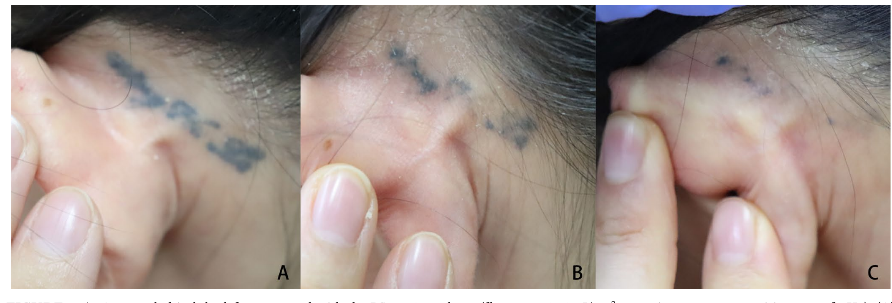
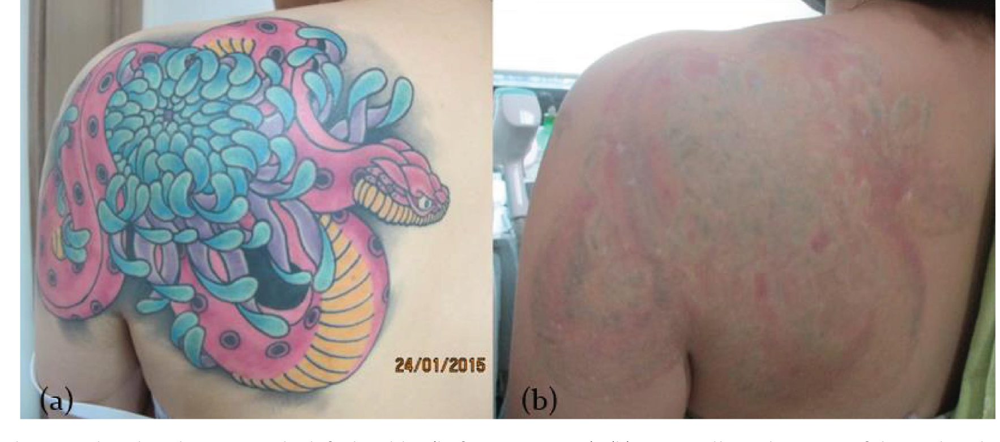
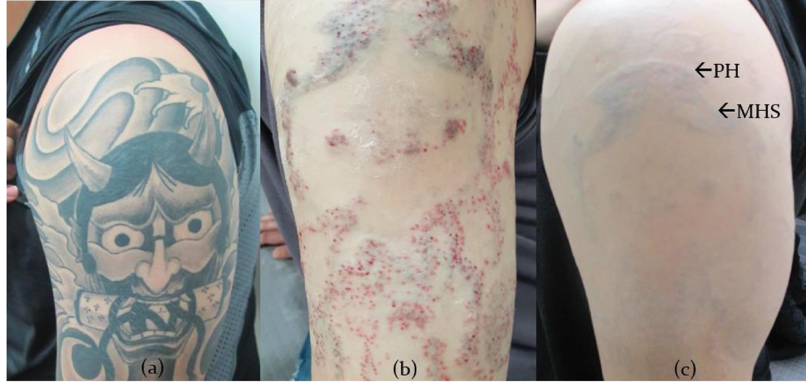
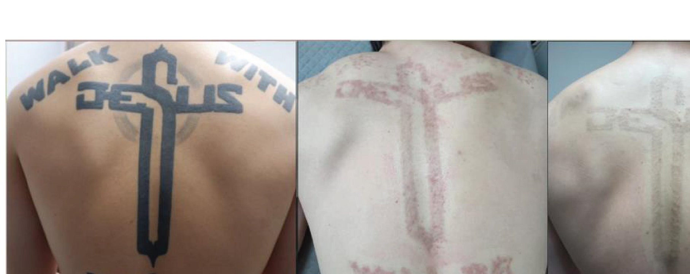
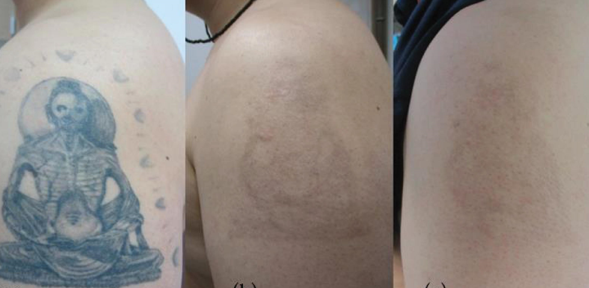
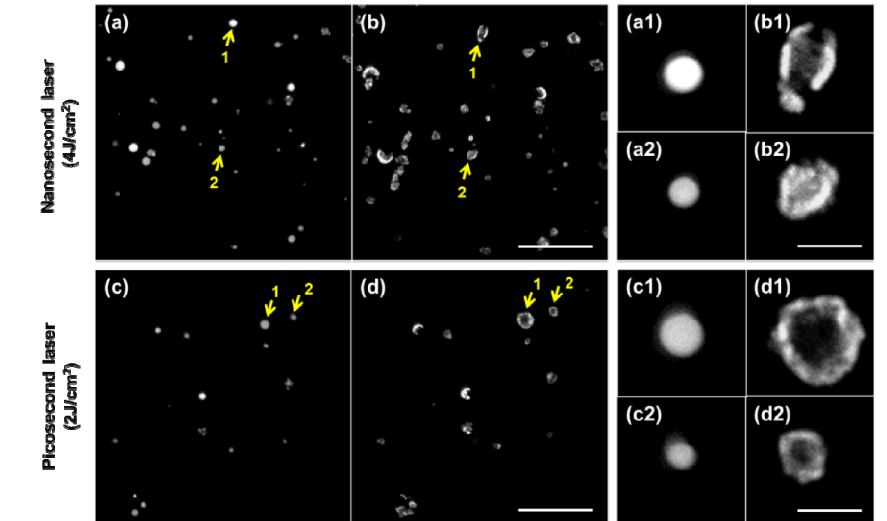
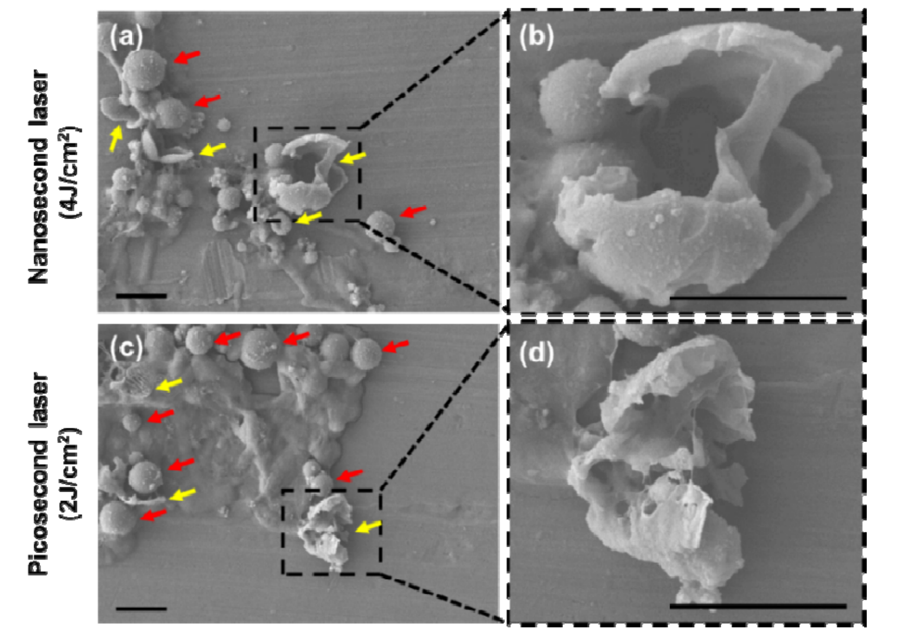

Пикосекундные Nd:YAG
при удалении татуировок
От фрагментации пигмента — к клинической стратегии.
Как меняется тактика при переходе от QS-Nd:YAG к pico-Nd:YAG
и где реально находится преимущество pico.
Два вопроса, которые задают всю лекцию.
Три уровня доказательности.
На каждом слайде метка показывает статус утверждения — чтобы отделять доказанное от механизма и от клинической гипотезы.
Три работы — три вопроса.
Nano vs Pico:
только необходимая физика
Без 20 минут селективного фототермолиза — только то, что меняет тактику.
QS-Nd:YAG против pico-Nd:YAG.
| Параметр | QS-Nd:YAG (нано) | Pico-Nd:YAG |
|---|---|---|
| Длительность импульса | ≈ 5 нс | ≈ 300–750 пс |
| Длина волны | 1064 нм | 1064 / 532 нм |
| Флюенс | высокая | ниже при сопоставимой энергии |
| Пиковая мощность | ниже | значительно выше |
| Ведущий компонент | заметная тепловая составляющая | фотоакустический / фотомеханический |
импульса ↓
мощность ↑
фрагментация ↑
Короче импульс — выше пиковая мощность — сильнее механическое дробление частицы при той же доставленной энергии.
Доказано исследованиямиБольшинство данных — всё ещё по нано.
В обзоре 2026 года большинство клинических исследований по-прежнему относятся к QS-Nd:YAG. Современные pico-Nd:YAG показывают сходное или иногда лучшее очищение при меньшей флюенс и меньшем числе процедур.
Доказанного универсального превосходства pico — нет. Это ключевая рамка, к которой мы будем возвращаться весь доклад.
Что на сегодня
реально известно?
Систематический обзор как каркас всей лекции.
Систематический обзор.
Nd:YAG хорошо работает — но не везде.
Pico перспективен. Но…
- Сопоставимое очищение
- В части исследований — меньше процедур
- В части — меньшая флюенс
- Часто — меньше боли
Слишком разные исследования.
Различались флюенс, размер пятна, длительность импульса, длина волны, тип и происхождение татуировки, фототип по Фитцпатрику, число процедур, интервалы и критерии очищения.
Поэтому — narrative synthesis, а не количественный мета-анализ. Общая достоверность доказательств оценена как low–very low.
Вывод для практики: универсальной цифры «pico эффективнее на X%» сегодня не существует.
QS против pico 1064 — 130 пациентов.

5 исследований,
а не 46
Разбираем конкретные работы внутри обзора Wong.
35 пс против 10 нс.
Важная деталь: в сравнении Ross преимущество pico сохранялось при одинаковой флюенс 0,65 Дж/см² — авторы связывали это с более высокой пиковой температурой и изменением оптических свойств пигмента.
Pico численно лучше — но без значимости.
Короткий горизонт стирает разницу.
Физически pico привлекательнее — но за короткий клинический горизонт преимущество может не проявиться.
Профессиональные мультиколор-татуировки.
Оборотная сторона: PIH в 21,6–35,1% татуировок; парадоксальное потемнение — 5,4%.
Тот же эффект — при меньшей флюенс.
Pico достигает сопоставимого или лучшего эффекта при существенно меньшей флюенс — это сильнее, чем просто «pico лучше разбивает пигмент».
Лазер — только первый шаг.
Куда девается
пигмент после pico?
Не «сколько процентов исчезло», а «где физически находится пигмент».
Прижизненная микроскопия кожи.
Метод: мультифотонная томография + FLIM. Фототипы IV–VI исключены.
Мишень — не идеальная наночастица.

Пигмент движется через эпидермис.

Очищение продолжается месяцами.

Биологический ответ — длительный.
Метаболический/воспалительный сдвиг к 12 неделе уменьшается, но к исходному не возвращается. Pico вызывает длительный биологический ответ — несмотря на преимущественно фотомеханическую модель.
Если pico быстрее дробит — проводить процедуры чаще?
Pico позволяет проводить процедуру часто — но из этого не следует, что процедуру надо проводить часто.
Как параметры
меняют безопасность
UGPT — «единая золотая параметрическая терапия» на 438 пациентах.
438 пациентов, фототипы III–IV.
Единый набор параметров.
450 пс — но разная энергетика.
| Параметр | Традиционный high-fluence pico 1064 | UGPT |
|---|---|---|
| Размер пятна | 3 мм | 7 мм |
| Флюенс | 3–5 Дж/см² | 0,75 Дж/см² |
| Длительность | 450 пс | 450 пс |
| Частота | 2 Гц | 10 Гц |
Та же длительность импульса — совершенно другая энергетическая стратегия. Это, пожалуй, главный практический урок Hur.
95% полного очищения — без осложнений.

92,3% очищения — и 100% осложнений.

Впечатляюще — но это не RCT.
Цифры Hur — материал для гипотез, а не доказательство оптимального параметра. Нельзя сказать студентам: «UGPT доказал, что 0,75 Дж/см² лучше 3–5 Дж/см²».
Побеление и пурпура — но без мокнутия.

Мишень меняется — меняется и режим.
Связка с Nguyen: мишень действительно меняется по ходу курса — и режим должен следовать за ней.
Фокусировка → дефокусировка.
Зум-манипула меняет схождение луча. По ходу курса меняется задача воздействия — и режим следует за ней.
Зачем так: пурпура без мокнутия не разрушает эпидермис и дерму, а фотобиостимулирует пигмент-нагруженные дермальные макрофаги — ускоряет их миграцию и выведение через лимфу. Мокнущая инвазивная эрозия, наоборот, повреждает кожу → гипопигментация и рубцы.
Организм дорабатывает за лазером.

Гипотеза авторов: после дальнейшей фрагментации очень мелкие частицы уже не дают выраженной лазерной реакции, но продолжают удаляться иммунологически.
Чем дальше идёт курс удаления — тем меньше лазерная мишень,
и тем меньше дополнительный эффект очередного импульса.
Возникает точка: лазер уже почти ничего не разрушает,
а организм продолжает удалять. Видно сразу в двух работах: Hur — спонтанная регрессия · Nguyen — очищение через 12 недель
Литературные параметры vs
контролируемая практика
Почему цифры из публикаций нельзя переносить в кабинет напрямую.
Рабочие параметры: 532 нм.
Параметры из практики Дмитрия Цедермана (CEDERMAN CLINIC) — экспертный клинический опыт: PicoSure 755, PicoPlus 1064/532, Melsytech QS Nd:YAG.
| Диаметр пятна | Плотность энергии | Клиническая оценка |
|---|---|---|
| 6,5 мм | 0,36 Дж/см² | ~70% без пигментации |
| 6,5 мм | 0,34 Дж/см² | ~99% без пигментации |
| 6,5 мм | 0,32 Дж/см² | ~100% без пигментации |
Параметры ориентировочные. Аппараты различаются. Всегда оцениваем клиническую реакцию и выполняем тестовые вспышки.
Рабочие параметры: 1064 нм.
| Диаметр пятна | Плотность энергии | Тип татуировки |
|---|---|---|
| 6 мм | 0,8–1,2 Дж/см² | насыщенные |
| 6 мм | 1,2–1,6 Дж/см² | средняя плотность |
| 6 мм | 1,4–2 Дж/см² | бледные |
| 6 мм | ≥ 2 Дж/см² | повышенное внимание ⚠ |
Параметры ориентировочные. Аппараты различаются. Всегда оцениваем клиническую реакцию и выполняем тестовые вспышки.
Дж/см² без диаметра пятна — почти пустая цифра.
E = F · A. «5» против «0,75» выглядит как огромная разница — но энергия импульса сопоставима, просто распределена по совершенно разной площади. Меняются облучённость, глубина, профиль пучка, число импульсов, накопление тепла.
Мы работаем не лазером —
мы управляем реакцией ткани. © В. Микрюков, 2026
эффективная флюенс
реакция пигмента
повреждение кожи
Стратегия следует за
эволюцией частицы
Не «Nano vs Pico», а «Nano → Pico» по мере изменения мишени.
Пароуглеродная реакция — это не просто гипотеза.
Поправка: доказательств, что nano клинически эффективнее pico именно из-за steam–carbon реакции, пока нет. А Ross показал преимущество pico при равной флюенс 0,65 Дж/см².
Мы не просто дробим пигмент — мы меняем его структуру.
На двухфотонной микроскопии (TPM) частицы до воздействия — преимущественно сферические, размером ~0,6–4 мкм. После импульса они становятся расширенными, фрагментированными и с полыми центрами. Эти изменения подтвердили электронной микроскопией (FE-SEM).
До и после импульса: та же частица.

«Расширенные, смятые, разорванные» оболочки.

Размер частицы меняет эффективность лазера.
| Размер частицы | Наносекундный (532 нм) | Пикосекундный (532 нм) |
|---|---|---|
| Крупные > 2 мкм | ≈ 100% при всех флюенс (1–4 Дж/см²) | ≈ 100% от 1,0 Дж/см²; ≈ 50% при 0,5 Дж/см² |
| Мелкие < 2 мкм | ≈ 60% при 1 Дж/см²; ≈ 80% при 2 Дж/см² | < 100% при всех флюенс |
При равной флюенс 1,0 Дж/см²: pico ≈ 80% против nano ≈ 60%. А pico при 1,0 Дж/см² даёт примерно ту же эффективность, что nano при вдвое большей 2,0 Дж/см².
Оба лазера дробят крупные частицы лучше мелких.
Нельзя говорить «pico лучше для мелких, nano — для крупных». Статья этого не показала — наоборот, и nano, и pico фрагментировали крупные частицы эффективнее мелких.
Повторные проходы: мельче и дальше от центра.
После одного импульса и nano, и pico дают крупные фрагменты. После повторных воздействий крупные фрагменты становятся мельче и распределяются к границам зон повреждения.
Это tissue-mimicking фантом, а не клиническое исследование пациентов — сильный экспериментальный аргумент, но не клиническое доказательство.
Pico — более однородное разрушение.
Кавитационные пузырьки заметнее после pico; число циклов расширения/коллапса выше, процесс длится сотни микросекунд — несколько миллисекунд. Заиндевение (frosting) — визуальный маркер этих быстрых физических процессов, а не доказательство конкретной химической реакции. Клиническое значение вакуолизации пока не определено.
Что с частицей — и что с её оптикой.
Оптическое «исчезновение» пигмента не приписываем напрямую Jang 2017 — для этого корректнее Ross 1998.
Что происходит с пигментом после лазера.
Почему оптимальный лазер может меняться по ходу курса.
Большой плотный агрегат ≠ мелкий фрагмент. По ходу курса мишень физически меняется — поэтому оптимальная стратегия может зависеть не только от цвета татуировки, но и от стадии деградации пигмента.
Плотный, насыщенный Carbon Black.
Много пигмента, крупные агрегаты. Главная задача — сильно изменить и разрушить массив пигмента.
Заиндевение (frosting) — это сигнал, а не «красиво побелело».
Frosting — визуальное проявление образования газовых пузырьков в дерме, быстрого изменения локальной оптики и реакции пигмента; обычно быстро разрешается.
Современные протоколы QS-Nd:YAG: самый широкий spot + минимальные настройки, вызывающие немедленное побеление/frosting, затем корректировка по плотности пигмента и реакции.
Философия: не максимизировать энергию, а найти достаточную энергию для нужного endpoint.
Пигмент уже значительно изменён.
Здесь возрастает роль пиковой мощности и фотоакустического эффекта — pico даёт очень высокую пиковую мощность при значительно меньшей общей флюенс.
Nano → Pico по мере эволюции мишени.
В обзоре Wong есть данные по комбинированному использованию 2 нс + 750 пс, где среднее число процедур было меньше, чем при традиционном QS-подходе.
Pico опаснее или безопаснее? — Неоднозначно.
Pico сам по себе не является причиной меньших осложнений. Критична доза на ткань и конечная реакция.
Когда оставаться на nano, когда — pico.
- хороший клинический ответ
- пигмент хорошо реагирует
- нет избыточного повреждения ткани
- улучшение стабильно от процедуры к процедуре
- очищение замедляется, плато
- остаётся плотный/резистентный пигмент
- предполагается мелкая остаточная мишень
- для nano приходится повышать флюенс, растёт риск
- нужную фрагментацию можно получить при меньшей флюенс
Оптимальная длительность может зависеть от стадии.
The optimal laser pulse duration may depend on the stage of tattoo pigment degradation rather than being constant throughout the treatment course.
8 шагов у кресла.
Что мы знаем
в 2026 году
Отделяем доказанное от недоказанного.
Пять устойчивых выводов.
Шесть вещей, которые нельзя утверждать.
Последнее особенно важно: это одна большая ретроспективная серия, а не международный консенсус. Общая доказательность Nd:YAG-литературы в обзоре 2026 — low–very low.
Три работы — три вывода.
Пикосекундный Nd:YAG — это не просто «более мощный наносекундный лазер».
Его преимущество — в возможности изменить характер взаимодействия с пигментом, особенно при меньшей флюенс. Но конечный результат определяет не длительность импульса сама по себе, а сочетание длительности, флюенс, размера пятна, длины волны, числа воздействий — и времени, которое нужно коже и иммунной системе, чтобы вывести уже фрагментированный пигмент. © В. Микрюков, 2026
Стратегия важнее
выбора «лучшего лазера».
Может быть, будущее — не в выборе лучшего лазера,
а в выборе правильной длительности импульса для конкретного этапа курса.
Основа лекции.
Что происходит с частицей.
Прямые DOI: Jang, Ahn, Hur, Nguyen, Chen. Только у Wong пока поиск PubMed — пришлёшь точный DOI/PMID, проставлю прямой.